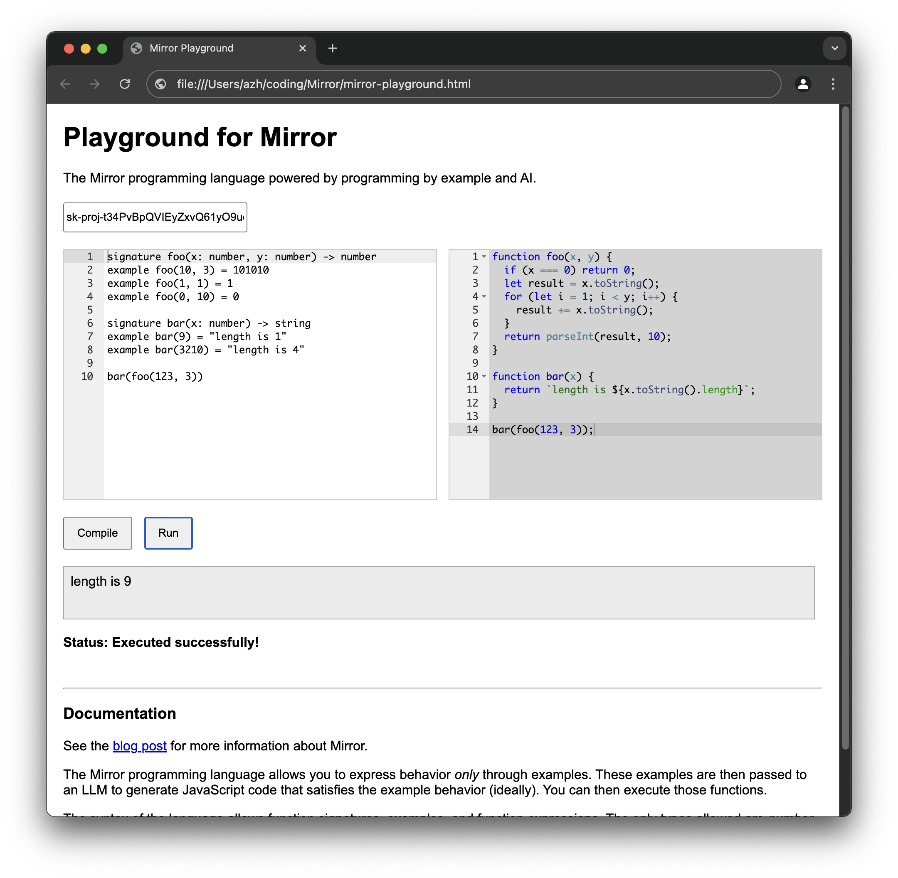

Associate Teaching Professor
Carnegie Mellon University
Programming by example is a technique where users provide examples of the outcome they want, and the system generates code that can perform it. For example, in Excel, you can demonstrate how you want a column formatted through an example or two, and Excel will learn a pattern and apply it to the rest.
But what if there was a programming language that only allows programming by example? Can we integrate AI into traditional programming languages?
I wanted to take the idea of programming by example to the extreme. In the Mirror language, all you can do is define functions through a set of example input-outputs pairs, then call the functions. That is it. Everything must be expressed through examples.
Let's start with a really simple example of how we would express an is_even function:
signature is_even(x: number) -> bool example is_even(0) -> true example is_even(1) -> false example is_even(222) -> true example is_even(-99) -> false
You provide the function name, parameters and their types, and the return type. Then you provide one or more examples with the expected result. It uses a strict syntax and supports a handful of basic types. You can create as many functions as you need and then chain them together.
After parsing using a traditional recursive descent parser, the "compiler" uses an LLM to generate JavaScript that satisfies the constraints expressed by the examples. You can see the generated code to verify if it is correct, or you can provide more examples and recompile it.
You can call your functions, either chaining them or passing literals as arguments, and it will execute the generated JavaScript, and print out the result of each.
is_even(123456)
You can declare as many functions as you'd like, use a variety of types (numbers, bools, strings, lists, and dictionaries), and chain the functions together.
That is the entire language.
Here are more examples:
signature foo(x: number, y: number) -> number example foo(10, 3) = 101010 example foo(1, 1) = 1 example foo(0, 10) = 0 signature bar(x: number) -> string example bar(9) = "length is 1" example bar(3210) = "length is 4" bar(foo(123, 3))
signature m(x: list[number]) -> number example m([2,9,5]) = 9 m([6,3])
signature counts(a: string) -> dict{string}
example counts("food") = {"f": "1", "o": "2", "d": "1"}
counts("tree")
counts("anakin")
I made a playground that you can run in your browser. You can download the single HTML file and single JS file, and run it yourself. You'll use your own OpenAI key. It is available on GitHub.
You could also use it as a JS library (though it needs some cleaning up).
So how does this magnificient piece of art work? There are two classes, the parser and the "compiler".
The parser is a simple recursive descent parser that returns three things: the function signature objects, the set of examples for each function, and the function calls. The grammar is below:
program = {signature | example | expression}
signature = "signature" name "(" parameters ")" "->" type
example = "example" name "(" literals ")" "=" literal
expression = name "(" subexpression ")"
subexpression = (expression | literal) {"," (expression | literal)}
literals = literal {"," literal}
literal = string | number | "true" | "false" | "[" literals "]" | "{" keyvalue {"," keyvalue} "}"
keyvalue = literal ":" literal
parameters = parameter {"," parameter}
parameter = name ":" type
type = "string" | "number" | "bool" | "list[" type "]" | "dict[" type "," type "]"
// name, string, number are tokens
The other part is the "compiler". I keep using quotes because an OpenAI LLM is actually doing the code generation. It uses a prompt to request that a JavaScript function is generated to satisfy the set of examples.
Mirror is a proof of concept of how AI can be integrated into traditional programming languages. Just because I don't want to code using natural language doesn't mean I can't harness the power of LLMs!